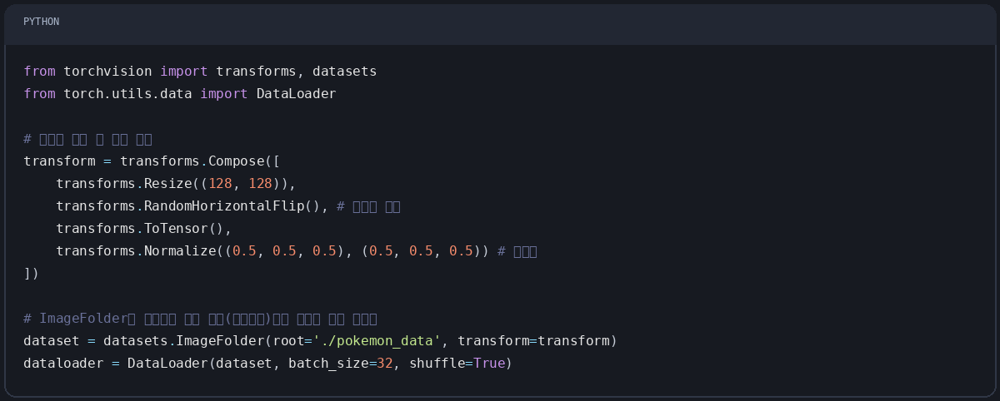
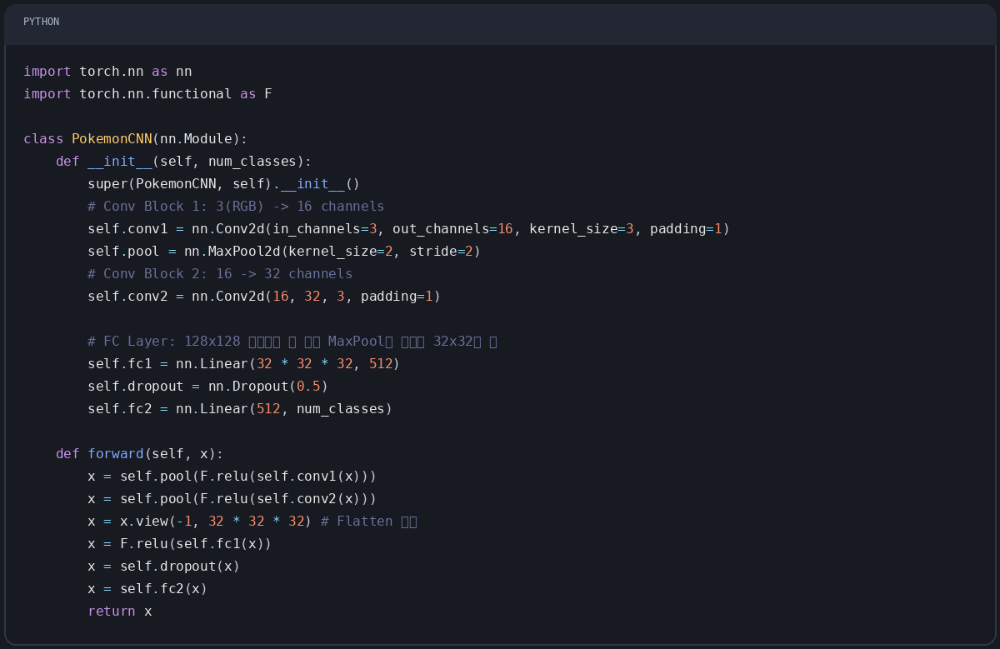
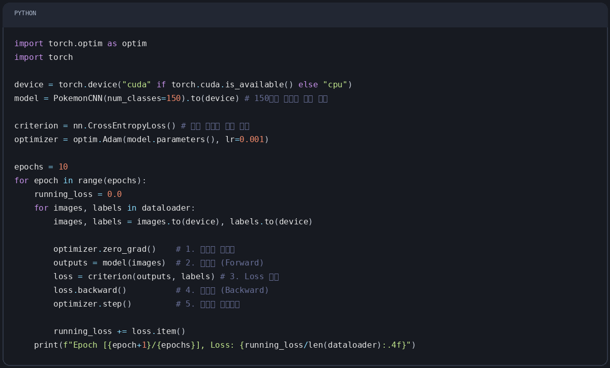

📚 4주차 Python Deep Learning (2026.11.03 Tue ~ 2026.11.09 Mon) | Total : 5 days
📕 C. Convolutional Neural Network (2026.11.05 Thu)
📃 a. Convolutional Neural Network (합성곱 신경망)
💡 핵심 개념: Fully Connected Layer(다층 퍼셉트론)의 한계인 '공간적 정보(Spatial Information) 손실'을 해결하기 위해 등장한 아키텍처. 2D 형태의 입력값을 그대로 유지하면서 공간적/지역적 특징을 추출합니다.
- 왜 CNN을 사용하는가?
- 일반적인 DNN은 2차원 이미지를 1차원으로 펴서(Flatten) 입력해야 하므로, 인접한 픽셀 간의 공간적 관계(상하좌우 연관성)가 완전히 무시됩니다. CNN은 필터(Filter)를 이용해 이 공간적 특징을 보존합니다.
- 주요 구성 요소
- 1. Convolution Layer (합성곱층)
- Filter (Kernel): 이미지의 특정 패턴(선, 곡선, 질감 등)을 찾는 가중치 행렬.
- Feature Map: 입력 이미지에 필터를 슬라이딩하며 내적(Dot Product) 연산한 결과물.
- Stride (보폭): 필터가 한 번에 이동하는 픽셀 수. Stride가 커지면 출력 크기가 작아집니다.
- Padding (패딩): 출력 크기가 줄어드는 것을 방지하고 가장자리 정보를 보존하기 위해 입력 데이터 외곽에 지정된 값(보통 0, Zero-Padding)을 채워 넣는 기법.
- 📐 출력 크기(Output Size) 계산 공식:
Output = (Input - Filter + 2 * Padding) / Stride + 1
- 2. Pooling Layer (풀링층)
- Feature Map의 크기를 줄여(Sub-sampling) 연산량을 감소시키고, 미세한 위치 변화에 대한 모델의 불변성(Translation Invariance)을 확보합니다.
- Max Pooling: 해당 영역에서 가장 큰 값만 추출 (가장 뚜렷한 특징을 강조, 현대 CNN에서 주로 사용).
- Average Pooling: 해당 영역의 평균값을 추출.
- 3. Fully Connected Layer (완전연결층)
- 추출된 최종 특징(Feature Map)을 1차원 벡터로 변환(Flatten)한 뒤, Softmax 연산 등을 통해 최종 클래스를 분류합니다.
- 1. Convolution Layer (합성곱층)
📃 b. LeNet-5 (CNN의 시초)
🏛️ 배경: 1998년 Yann LeCun이 제안. 우편번호(수표 숫자) 인식을 위해 개발된 모델로, 현대 CNN 아키텍처의 근간(Conv-Pool-FC)을 제시했습니다.
- 네트워크 구조 (입력: 32x32 흑백 이미지)
- C1 (Conv Layer): 5x5 필터 6개 사용 ➔ 28x28x6 Feature Map 생성
- S2 (Average Pool): 2x2 풀링 (Stride 2) ➔ 14x14x6
- C3 (Conv Layer): 5x5 필터 16개 사용 ➔ 10x10x16
- S4 (Average Pool): 2x2 풀링 (Stride 2) ➔ 5x5x16
- C5 (Conv Layer): 5x5 필터 120개 사용 (사실상 FC 역할)
- F6 (FC Layer): 84개의 노드
- Output: 10개 클래스 (0~9 숫자 분류)
- 한계점
- 활성화 함수로
Sigmoid와Tanh를 사용하여 레이어가 깊어질수록 기울기 소실(Vanishing Gradient) 문제가 발생했습니다. - 복잡한 이미지(ImageNet 등)를 처리하기에는 연산력과 파라미터 수가 부족했습니다.
- 활성화 함수로
📃 c. AlexNet (ImageNet 우승 모델)
🏆 배경: 2012년 ILSVRC 대회에서 2위와 압도적인 성능 차이(오차율 15.3% vs 26.2%)로 우승하며 딥러닝의 시대를 연 기념비적인 모델입니다.
- 네트워크 구조 (입력: 227x227 RGB 이미지)
- 5개의 Convolutional Layer + 3개의 Max Pooling Layer + 3개의 Fully Connected Layer.
- 6천만 개의 파라미터를 가짐. 당시 하드웨어 한계로 2개의 GTX 580 GPU에 네트워크를 분할하여 병렬 학습.
- 🌟 3가지 핵심 혁신 요소 (딥러닝 표준이 됨)
- ReLU (Rectified Linear Unit) 도입:
f(x) = max(0, x)- 양수 입력에 대해 미분값이 항상 1이므로 기울기 소실 문제를 완벽히 해결했으며, 연산 속도가 Tanh 대비 약 6배 빠릅니다.
- Dropout (드롭아웃) 적용:
- FC 층에서 학습을 진행할 때, 설정된 확률(예: 0.5)로 뉴런을 무작위로 비활성화하여 특정 뉴런에 대한 의존도를 낮추고 과적합(Overfitting)을 방지합니다.
- Data Augmentation (데이터 증강):
- 이미지 좌우 반전(Horizontal Flip), 자르기(Random Crop), RGB 채널 강도 조절(Color Jittering)을 통해 제한된 데이터셋의 한계를 극복했습니다.
- ReLU (Rectified Linear Unit) 도입:
📃 d. Project (Pokemon CNN)
🎯 프로젝트 목표: 포켓몬스터 이미지 데이터를 입력받아 어떤 포켓몬인지 분류(Multi-class Classification)하는 커스텀 CNN 모델 구현
✅ PyTorch 기반 프로젝트 구현 파이프라인
- 1. Data Preparation & Preprocessing (데이터 준비 및 전처리)Python
torchvision.transforms를 이용해 이미지 크기를 통일하고 증강(Augmentation) 기법을 적용합니다.

python 코드 - 2. Model Definition (모델 아키텍처 설계) Python
nn.Module을 상속받아 직접 Convolution과 Pooling 레이어를 쌓습니다.

python 코드 - 3. Training Loop (학습 루프 구현) Python
- Forward Propagation -> Loss 계산 -> Backward Propagation -> 최적화(가중치 업데이트)의 4단계를 반복합니다.

python 코드 - 4. Evaluation (평가)
torch.no_grad()상태에서 Validation/Test 데이터셋으로 모델의 예측 정확도(Accuracy)를 측정하고, 오답 이미지를 분석하여 모델을 개선합니다.